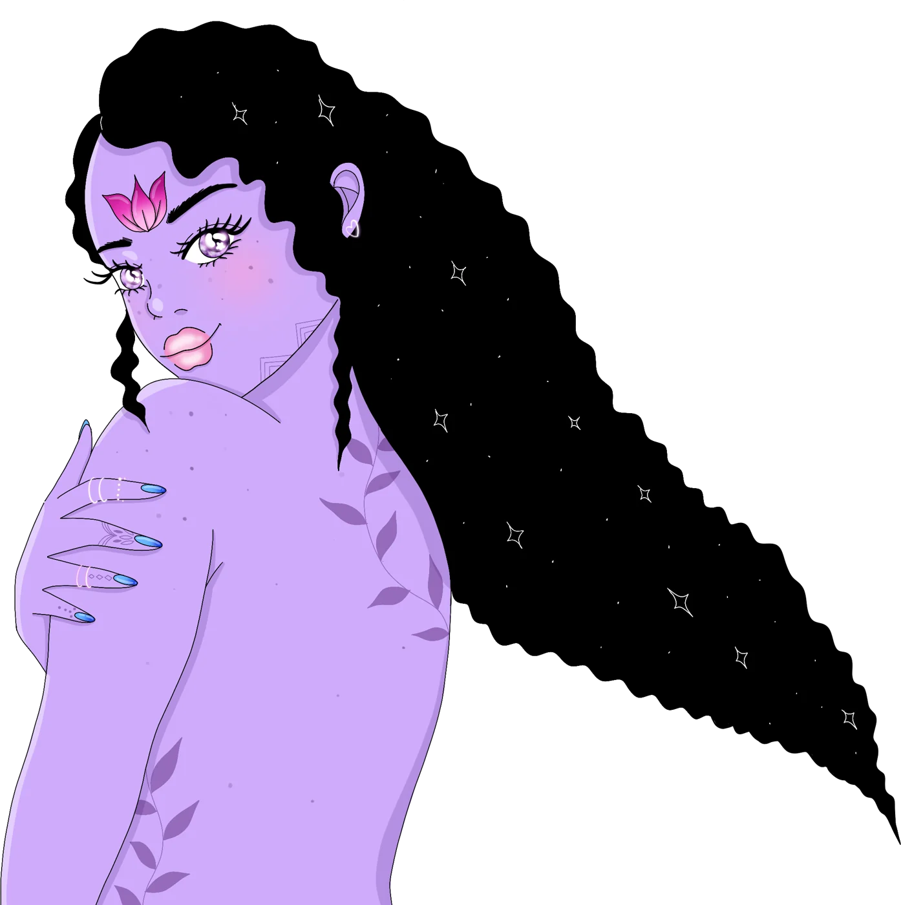
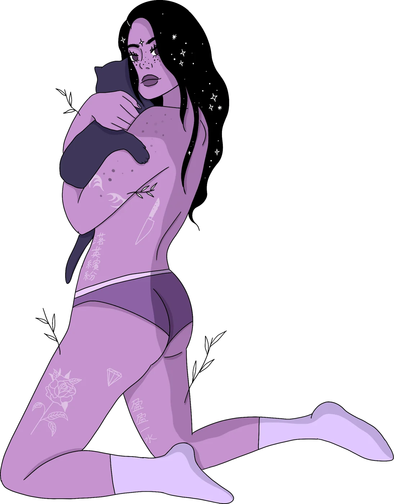

illustrated lyric essays · zines · art
Human stories meet cosmos
Alien Sisterhood is a body of illustrated lyric essays exploring womanhood through raw emotional storytelling and cosmic, dreamlike imagery.



more than an atelier
Where raw stories meet otherworldly art
It’s a space for anyone who’s ever felt a little alien on this planet. Through illustrated lyrical essays, we tell stories that are strange, honest, and deeply human.
read our latest story
Trash Moon Diaries
A story of three alien girls in their late 20s, fumbling, laughing, and transforming under broken streetlights.
This story is built on the truth that life's most beautiful moments often grow from what we are taught to discard: the chaos, the heartbreak, the weird, the unwanted.
monthly digital zine
Zines from the Alien Sisterhood
Indie feminist art, illustrated essays, and zines exploring late-20s womanhood, queer identity, creative burnout, and the courage to start over.
commissions
Let’s work together
We welcome both personal and commercial projects. Whether it’s a portrait gift for a loved one or a one-of-a-kind illustration for your business, we’re here to bring your vision to life.
